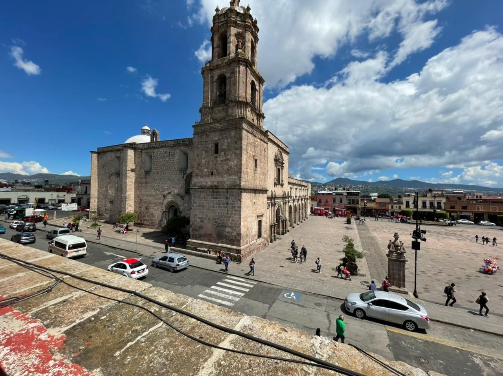

Sobre Morelia
Morelia es una hermosa ciudad colonial ubicada en el estado de Michoacán, México. Con su arquitectura histórica, calles empedradas y rica cultura, Morelia es considerada Patrimonio de la Humanidad por la UNESCO. La ciudad es conocida por su catedral barroca, su acueducto, sus plazas y sus festivales tradicionales, en la imagen a continuación se puede ver el tempo de San Francisco.
Atracciones principales
- Catedral de Morelia: Impresionante catedral de estilo barroco, ubicada en la Plaza de Armas.
- Aqueducto de Morelia: Majestuoso acueducto del siglo XVIII que se extiende por varios kilómetros.
- Plaza de Armas: El corazón de Morelia, rodeada de edificios históricos y animada vida local.